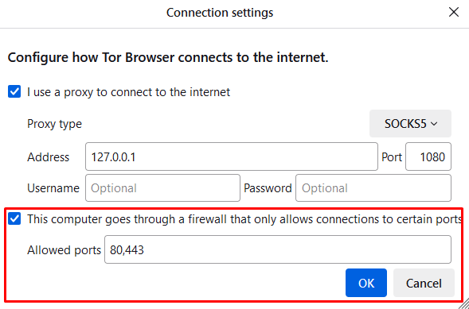
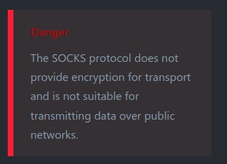

| Ник |
Пост |
Дата |
| 4nonch(4nonch) | Есть желание настроить использование тора через арендованную VPS с поднятым VLESS. Само подключение к тору работает только с мостами, однако хотелось бы подключаться напрямую через мою VLESS прокси без нужды в мостах.
На текущий момент использую схему VLESS - WSS - Nginx. Однако не удаётся добиться подключения через проксю (Tor Browser could not connect to Tor).
В самом браузере в настройках сети указываю socks5 прокси 127.0.0.1:1080 для vless. Результатов не дало. Также оборачивал весь трафик в vless туннель через v2rayN. Всё также, подключения нет.
Попытался на самой VPS поставить tor (apt install tor) и проверить доступность подключения через torsocks curl ... - подключение проходило. Не знаю, использует ли сервис тора мосты по умолчанию, но если нет, то является признаком того что с VPS сеть тора доступна и не заблокирована.
В чём может быть проблема? VLESS не поддерживает передачу тор траффика или как? Но почему? Vless же должен выглядеть как обычновенное tls подключение, особенно в схеме с nginx’ом. Нужно использовать Reality? Но так ли сильно оно будет отличаться от моей схемы, ведь у меня всё сделано через nginx с подписанным сертификатом.
Ниже приведу свои конфигурации. Хост, UUID, а также path заменил на подходящие к демонстрации эквиваленты. (my.host.com; myuuid; mypath…)
Клиент xray:
{
"log": {
},
"inbounds": [
{
"port": "1080",
"protocol": "socks",
"settings": {
"auth": "noauth",
"udp": true
}
},
{
"port": "1081",
"protocol": "http",
"settings": { }
}
],
"outbounds": [
{
"protocol": "vless",
"settings": {
"vnext": [
{
"address": "my.host.com",
"port": 443,
"users": [ { "id": "myuuid", "encryption": "none" } ]
}
]
},
"streamSettings": {
"network": "ws",
"security": "tls",
"wsSettings": { "path": "/mypath" },
"tlsSettings": { "allowInsecure": false, "serverName": "my.host.com", "fingerprint": "chrome" }
}
},
{ "tag": "direct", "protocol": "freedom", "settings": { } },
{ "tag": "blocked", "protocol": "blackhole", "settings": { } }
],
"routing": {
"domainStrategy": "IPOnDemand",
"rules": [
{
"type": "field",
"ip": [ "geoip:private" ],
"outboundTag": "direct"
}
]
}
}
Сервер xray:
{
"log": {
"loglevel": "none",
"access": "/var/log/xray/access.log",
"error": "/var/log/xray/error.log",
"dnsLog": false
},
"inbounds": [
{
"listen": "127.0.0.1",
"port": 8088 ,
"protocol": "vless",
"settings": {
"clients": [
{
"id": "myuuid"
}
],
"decryption": "none"
},
"streamSettings": {
"network": "ws",
"wsSettings": {
"path": "/mypath"
}
},
"sniffing": {
"enabled": true,
"destOverride": [
"http",
"tls"
]
}
}
],
"outbounds": [
{
"tag": "direct",
"protocol": "freedom",
"settings": {}
},
{
"tag": "blocked",
"protocol": "blackhole",
"settings": {}
}
],
"routing": {
"domainStrategy": "IPIfNonMatch",
"rules": [
{
"type": "field",
"ip": [
"geoip:cn",
"geoip:private"
],
"outboundTag": "blocked"
},
{
"type": "field",
"domain": ["geosite:category-ads-all"],
"outboundTag": "block"
}
]
}
}
Конфигурация nginx (сделано поверх существующего конфига для одного приложения, важная часть реализующая перенаправление подключений в xray находится в location /mypath):
upstream myhost {
server unix:/srv/.venvs/myhost/run/gunicorn.sock fail_timeout=0;
}
server {
server_name my.host.com;
listen 80;
return 301 https://my.host.com$request_uri;
}
server {
server_name my.host.com;
listen 443 ssl;
listen 443 quic reuseport ipv6only=off;
ssl_protocols TLSv1.3 TLSv1.2;
ssl_certificate /etc/letsencrypt/live/my.host.com/fullchain.pem;
ssl_certificate_key /etc/letsencrypt/live/my.host.com/privkey.pem;
ssl_ciphers ECDHE-ECDSA-AES128-GCM-SHA256:ECDHE-RSA-AES128-GCM-SHA256:ECDHE-ECDSA-AES256-GCM-SHA384:ECDHE-RSA-AES256-GCM-SHA384:ECDHE-ECDSA-CHACHA20-POLY1305:ECDHE-RSA-CHACHA20-POLY1305:DHE-RSA-AES128-GCM-SHA256:DHE-RSA-AES256-GC M-SHA384;
client_header_timeout 5m;
keepalive_timeout 5m;
client_max_body_size 15M;
access_log /var/log/myhost/nginx/access/access.log;
error_log /var/log/myhost/nginx/error/error.log;
location /mypath {
if ($http_upgrade != "websocket") {
return 404;
}
proxy_pass http://127.0.0.1:8088;
proxy_redirect off;
proxy_http_version 1.1;
proxy_set_header Upgrade $http_upgrade;
proxy_set_header Connection "upgrade";
proxy_set_header Host $host;
proxy_set_header X-Real-IP $remote_addr;
proxy_set_header X-Forwarded-For $proxy_add_x_forwarded_for;
proxy_read_timeout 5d;
}
location /static/ {
alias /srv/myhost/static/;
}
location / {
proxy_pass http://myhost/;
proxy_http_version 1.1;
proxy_connect_timeout 1;
proxy_set_header Host $host;
proxy_set_header X-Real-IP $remote_addr;
proxy_set_header X-Forwarded-For $proxy_add_x_forwarded_for;
proxy_set_header X-Forwarded-Proto $scheme;
}
}
| 2025-01-04T11:17:53.368Z |
| Xunlei | Для настройки прокси исходящих подключений тора есть параметр
[[Socks5Proxy]] **Socks5Proxy** __host__[:__port__]::
Tor will make all OR connections through the SOCKS 5 proxy at host:port
(or host:1080 if port is not specified).
| 2025-01-04T11:35:02.530Z |
| denium | Посмотрите лог тора. Попробуйте ограничить порты до 80,443. Или можно попробовать только 9001.
Возможно VLESS пытается влезть в трафик, думая что там TLS, а там не TLS. И 80 наверняка не HTTP, а CONNECT. Возможно 9001 трогать не будет. | 2025-01-04T11:46:42.839Z |
| 4nonch(4nonch) | Я подозреваю вы привели настройку для torrc? Как я описал в заголовочном посте, я пытался указывать прокси через UI браузера (пример на картинке ниже).
Однако попробую сейчас указать напрямую в Tor Browser\Browser\TorBrowser\Data\Tor\torrc и сообщу результат строчкой ниже. Привожу установленную скриншот с установленной настройкой (надеюсь не ошибся, лол).
P.S. Всё также нет подключения. | 2025-01-04T11:49:18.450Z |
| Xunlei | Да, для Tor Expert Bundle. Как работает Tor Browser я не знаю. Добейтесь для начала того, чтобы просто сайты открывались через ваш прокси.
Вроде бы этот метод работает только с https трафиком. | 2025-01-04T11:54:06.500Z |
| 4nonch(4nonch) |
Посмотрите лог тора
Точно, надо было сразу их привести. Убрал запись из torrc на всякий, указал socks5 вновь через UI. Подключаюсь. Прикреплю лог в самом конце. БТВ, что-то я не вижу чтобы браузер пытался использовать 127.0.0.1:1080 в нём, но может конкретно это подключение не логируется. Падает на хендшейке.
Попробуйте ограничить порты до 80,443. Или можно попробовать только 9001
Извините, не очень понял. Локальное socks5 прокси с xray инстансом (клиент) поднят на 1080, он же в свою очередь отправляет трафик на my.host.com:443/mypath.
2025-01-04 11:53:07.958 [NOTICE] DisableNetwork is set. Tor will not make or accept non-control network connections. Shutting down all existing connections.
2025-01-04 11:53:14.547 [NOTICE] Opening Socks listener on 127.0.0.1:9150
2025-01-04 11:53:14.547 [NOTICE] Opened Socks listener connection (ready) on 127.0.0.1:9150
2025-01-04 11:53:15.109 [NOTICE] Bootstrapped 3% (conn_proxy): Connecting to proxy
2025-01-04 11:53:15.111 [NOTICE] Bootstrapped 4% (conn_done_proxy): Connected to proxy
2025-01-04 11:53:15.112 [NOTICE] Bootstrapped 10% (conn_done): Connected to a relay
2025-01-04 11:53:27.881 [WARN] Problem bootstrapping. Stuck at 10% (conn_done): Connected to a relay. (unexpected eof while reading; TLS_ERROR; count 10; recommendation warn; host 8238952147AAD596A49540DD146215D5F5627913 at 146.70.120.58:9001)
2025-01-04 11:53:27.881 [WARN] 10 connections have failed:
2025-01-04 11:53:27.881 [WARN] 10 connections died in state handshaking (TLS) with SSL state error in HANDSHAKE
2025-01-04 11:53:27.881 [WARN] Problem bootstrapping. Stuck at 10% (conn_done): Connected to a relay. (unexpected eof while reading; TLS_ERROR; count 11; recommendation warn; host E14B30A83FF80C576B2EC0F2C8A5F29D41B8DC8E at 116.203.64.212:8080)
2025-01-04 11:53:27.881 [WARN] 11 connections have failed:
2025-01-04 11:53:27.881 [WARN] 11 connections died in state handshaking (TLS) with SSL state error in HANDSHAKE
2025-01-04 11:53:27.881 [WARN] Problem bootstrapping. Stuck at 10% (conn_done): Connected to a relay. (unexpected eof while reading; TLS_ERROR; count 12; recommendation warn; host 3AF33BF8811F282580045FFD87579461B6D8D5F3 at 83.77.218.29:30002)
2025-01-04 11:53:27.881 [WARN] 12 connections have failed:
2025-01-04 11:53:27.881 [WARN] 12 connections died in state handshaking (TLS) with SSL state error in HANDSHAKE
2025-01-04 11:53:27.882 [WARN] Problem bootstrapping. Stuck at 10% (conn_done): Connected to a relay. (unexpected eof while reading; TLS_ERROR; count 13; recommendation warn; host 392051FDD20D371CF90EE7BCA39F4763427B118D at 95.216.23.120:9001)
2025-01-04 11:53:27.882 [WARN] 13 connections have failed:
2025-01-04 11:53:27.882 [WARN] 13 connections died in state handshaking (TLS) with SSL state error in HANDSHAKE
2025-01-04 11:53:27.896 [NOTICE] Closing no-longer-configured Socks listener on 127.0.0.1:9150
2025-01-04 11:53:27.896 [NOTICE] DisableNetwork is set. Tor will not make or accept non-control network connections. Shutting down all existing connections.
2025-01-04 11:53:27.897 [WARN] Problem bootstrapping. Stuck at 10% (conn_done): Connected to a relay. (DONE; DONE; count 14; recommendation warn; host 66C102FA5DDF48C9EEEB048C1630933B66C50ECC at 94.140.115.114:8443)
2025-01-04 11:53:27.897 [WARN] 14 connections have failed:
2025-01-04 11:53:27.897 [WARN] 13 connections died in state handshaking (TLS) with SSL state error in HANDSHAKE
2025-01-04 11:53:27.897 [WARN] 1 connections died in state handshaking (TLS) with SSL state SSLv3/TLS write client hello in HANDSHAKE
2025-01-04 11:53:27.898 [WARN] connection_connect_sockaddr: Bug: Tried to open a socket with DisableNetwork set. (on Tor 0.4.8.13 e153e72c01315f86)
2025-01-04 11:53:27.898 [WARN] tor_bug_occurred_: Bug: connection.c:2204: connection_connect_sockaddr: This line should not have been reached. (Future instances of this warning will be silenced.) (on Tor 0.4.8.13 e153e72c01315f86)
2025-01-04 11:53:27.898 [WARN] Bug: Tor 0.4.8.13 (git-e153e72c01315f86): Line unexpectedly reached at connection_connect_sockaddr at connection.c:2204. (Stack trace not available) (on Tor 0.4.8.13 e153e72c01315f86)
2025-01-04 11:53:27.898 [WARN] Problem bootstrapping. Stuck at 10% (conn_done): Connected to a relay. (DONE; DONE; count 15; recommendation warn; host CB19C930356F4F321CC87E063EBDE473674F2F97 at 162.19.171.180:9010)
2025-01-04 11:53:27.898 [WARN] 15 connections have failed:
2025-01-04 11:53:27.898 [WARN] 13 connections died in state handshaking (TLS) with SSL state error in HANDSHAKE
2025-01-04 11:53:27.898 [WARN] 2 connections died in state handshaking (TLS) with SSL state SSLv3/TLS write client hello in HANDSHAKE
2025-01-04 11:53:27.898 [WARN] Problem bootstrapping. Stuck at 10% (conn_done): Connected to a relay. (DONE; DONE; count 16; recommendation warn; host 52E78985D513594EA087D1B2AE280CCF7B954EBB at 192.42.116.188:587)
2025-01-04 11:53:27.898 [WARN] 16 connections have failed:
2025-01-04 11:53:27.898 [WARN] 13 connections died in state handshaking (TLS) with SSL state error in HANDSHAKE
2025-01-04 11:53:27.898 [WARN] 3 connections died in state handshaking (TLS) with SSL state SSLv3/TLS write client hello in HANDSHAKE
2025-01-04 11:53:27.898 [WARN] Problem bootstrapping. Stuck at 10% (conn_done): Connected to a relay. (DONE; DONE; count 17; recommendation warn; host 1815E96EDB9444E9CD0D11FB9BB695B687C21E82 at 137.226.34.45:9006)
2025-01-04 11:53:27.898 [WARN] 17 connections have failed:
2025-01-04 11:53:27.898 [WARN] 13 connections died in state handshaking (TLS) with SSL state error in HANDSHAKE
2025-01-04 11:53:27.898 [WARN] 4 connections died in state handshaking (TLS) with SSL state SSLv3/TLS write client hello in HANDSHAKE
2025-01-04 11:53:27.898 [WARN] Problem bootstrapping. Stuck at 10% (conn_done): Connected to a relay. (DONE; DONE; count 18; recommendation warn; host D9D4BCE7133616C8C9FA4C4156EB14D344E6229D at 77.221.152.105:443)
2025-01-04 11:53:27.898 [WARN] 18 connections have failed:
2025-01-04 11:53:27.898 [WARN] 13 connections died in state handshaking (TLS) with SSL state error in HANDSHAKE
2025-01-04 11:53:27.898 [WARN] 5 connections died in state handshaking (TLS) with SSL state SSLv3/TLS write client hello in HANDSHAKE
2025-01-04 11:53:27.898 [WARN] Problem bootstrapping. Stuck at 10% (conn_done): Connected to a relay. (DONE; DONE; count 19; recommendation warn; host 67BE9A0658EF0106FCCB98FF1C68D6AAFFFC3CA9 at 85.195.244.251:28123)
2025-01-04 11:53:27.898 [WARN] 19 connections have failed:
2025-01-04 11:53:27.898 [WARN] 13 connections died in state handshaking (TLS) with SSL state error in HANDSHAKE
2025-01-04 11:53:27.898 [WARN] 6 connections died in state handshaking (TLS) with SSL state SSLv3/TLS write client hello in HANDSHAKE
2025-01-04 11:53:27.898 [WARN] Problem bootstrapping. Stuck at 10% (conn_done): Connected to a relay. (DONE; DONE; count 20; recommendation warn; host F3DE41C519A29899C9E1F6DC59715C72EBD4C3C3 at 45.138.16.147:143)
2025-01-04 11:53:27.898 [WARN] 20 connections have failed:
2025-01-04 11:53:27.898 [WARN] 13 connections died in state handshaking (TLS) with SSL state error in HANDSHAKE
2025-01-04 11:53:27.898 [WARN] 7 connections died in state handshaking (TLS) with SSL state SSLv3/TLS write client hello in HANDSHAKE
2025-01-04 11:53:27.898 [WARN] Problem bootstrapping. Stuck at 10% (conn_done): Connected to a relay. (DONE; DONE; count 21; recommendation warn; host 09BFE6A362D2CE435C45F99B56171B6DA486D0F1 at 89.58.33.214:443)
2025-01-04 11:53:27.898 [WARN] 21 connections have failed:
2025-01-04 11:53:27.898 [WARN] 13 connections died in state handshaking (TLS) with SSL state error in HANDSHAKE
2025-01-04 11:53:27.898 [WARN] 8 connections died in state handshaking (TLS) with SSL state SSLv3/TLS write client hello in HANDSHAKE
2025-01-04 11:53:27.898 [WARN] Problem bootstrapping. Stuck at 10% (conn_done): Connected to a relay. (DONE; DONE; count 22; recommendation warn; host B8F8E84576DE8CC6CDE136D2374F9385A2AFFAD0 at 194.55.13.207:443)
2025-01-04 11:53:27.898 [WARN] 22 connections have failed:
2025-01-04 11:53:27.898 [WARN] 13 connections died in state handshaking (TLS) with SSL state error in HANDSHAKE
2025-01-04 11:53:27.898 [WARN] 9 connections died in state handshaking (TLS) with SSL state SSLv3/TLS write client hello in HANDSHAKE
2025-01-04 11:53:27.898 [WARN] Problem bootstrapping. Stuck at 10% (conn_done): Connected to a relay. (DONE; DONE; count 23; recommendation warn; host D7C218579374ED6525E12362A0B2A3DAEB0B5CEC at 135.181.63.118:9101)
2025-01-04 11:53:27.898 [WARN] 23 connections have failed:
2025-01-04 11:53:27.898 [WARN] 13 connections died in state handshaking (TLS) with SSL state error in HANDSHAKE
2025-01-04 11:53:27.898 [WARN] 10 connections died in state handshaking (TLS) with SSL state SSLv3/TLS write client hello in HANDSHAKE
2025-01-04 11:53:28.105 [NOTICE] Delaying directory fetches: DisableNetwork is set.
| 2025-01-04T11:58:14.473Z |
| 4nonch(4nonch) |
Добейтесь для начала того, чтобы просто сайты открывались через ваш прокси.
Если ничего не путаю, то тор браузер не позволяет использовать его без подключения непосредственно к сети тора. А так прокси точно работает вне тор браузера, я сейчас через него сижу в лисе.
Да, для Tor Expert Bundle.
Попробую посмотреть.
Вроде бы этот метод работает только с https трафиком.
Разве прокси не будет любой трафик заворачивать в https до моего сайта-заглушки, а затем проводить обыкновенное соединение через тор уже с сети VPS-провайдера? | 2025-01-04T12:03:09.757Z |
| Xunlei |
Обычный VLESS наверное будет, а вот reality не знаю, смысла в этом мало, т. к. этот метод сделан для сокрытия обычного HTTPS веб трафика от статистического анализа, а для тора почти наверняка уже известен китайским цензорам отпечаток трафика. В РФ пока работает простой метод добавления HTTPS-подобного хэндшейка в начало TCP потока. | 2025-01-04T12:08:55.446Z |
| denium |
что-то я не вижу чтобы браузер пытался использовать 127.0.0.1:1080 в нём
Использует, просто не пишет адрес:
Connecting to proxy
Connected to proxy
Извините, не очень понял
Я имел в виду, чтобы Tor браузер использовал определённые порты. На скрине настройка в самом низу (This computer goes through… certain ports). Но уже в логе видно, что это не влияет.
Падает на хендшейке
Да, VLESS копается в трафике. Советую воспользоваться webtunnel мостом в Tor браузере. Надеюсь, поможет. Он маскируется под обычный HTTPS.
Я имею в виду, что webtunnel и ещё прокси. Хотя, не знаю, можно ли так. А может и одного webtunnel хватит, но он пойдёт через провайдера, а не через VLESS тогда (если галочку прокси снять). В принципе, прокси должен передаваться мосту. | 2025-01-04T12:59:28.313Z |
| 4nonch(4nonch) |
Я имел в виду, чтобы Tor браузер использовал определённые порты
Точно. Поставил, сохранил, перезапустил браузер.

Подключение всё ещё не доступно, лог прикреплю в самом конце.
Советую воспользоваться webtunnel мостом в Tor браузере
Проверил, он у меня и без моей прокси работает, впрочем как и obfs4. Но, что интересно, с моей прокси не работает, когда как obfs4 работал. Правда как будто бы весь смысл теряется, я хотел подключаться через vless напрямую, а тут всё равно приходится использовать мосты. Не понимаю почему так происходит, видимо трафик как-то странно передаётся.
Собственно ошибка при webtunnel + мой сокс
2025-01-04 13:10:17.896 [NOTICE] DisableNetwork is set. Tor will not make or accept non-control network connections. Shutting down all existing connections.
2025-01-04 13:10:17.899 [NOTICE] Opening Socks listener on 127.0.0.1:9150
2025-01-04 13:10:17.899 [NOTICE] Opened Socks listener connection (ready) on 127.0.0.1:9150
2025-01-04 13:10:18.948 [NOTICE] Bridge 'bauruine' has both an IPv4 and an IPv6 address. Will prefer using its IPv6 address ([2001:db8:5985:711a:a60e:61a0:1260:b42e]:443) based on the configured Bridge address.
2025-01-04 13:10:18.948 [NOTICE] Bootstrapped 1% (conn_pt): Connecting to pluggable transport
2025-01-04 13:10:18.949 [NOTICE] Bootstrapped 2% (conn_done_pt): Connected to pluggable transport
2025-01-04 13:10:19.471 [NOTICE] Bootstrapped 10% (conn_done): Connected to a relay
2025-01-04 13:10:19.585 [NOTICE] Bootstrapped 14% (handshake): Handshaking with a relay
2025-01-04 13:10:19.701 [NOTICE] Bootstrapped 15% (handshake_done): Handshake with a relay done
2025-01-04 13:10:19.701 [NOTICE] Bootstrapped 20% (onehop_create): Establishing an encrypted directory connection
2025-01-04 13:10:19.818 [NOTICE] Bootstrapped 25% (requesting_status): Asking for networkstatus consensus
2025-01-04 13:10:19.938 [NOTICE] Bridge 'bauruine' has both an IPv4 and an IPv6 address. Will prefer using its IPv6 address ([2001:db8:5985:711a:a60e:61a0:1260:b42e]:443) based on the configured Bridge address.
2025-01-04 13:11:40.204 [ERR] Managed proxy "TorBrowser\Tor\PluggableTransports\lyrebird.exe": Error dialing: EOF
2025-01-04 13:11:40.204 [WARN] Proxy Client: unable to connect OR connection (handshaking (proxy)) with [2001:db8:17e6:8669:9ae4:38cc:f71c:9577]:443 ID=<none> RSA_ID=0242A01C5ED89032AB50911166698E75C2E84C89 ("general SOCKS server failure")
2025-01-04 13:11:40.475 [NOTICE] Bootstrapped 75% (enough_dirinfo): Loaded enough directory info to build circuits
2025-01-04 13:11:40.476 [NOTICE] Bootstrapped 90% (ap_handshake_done): Handshake finished with a relay to build circuits
2025-01-04 13:11:40.476 [NOTICE] Bootstrapped 95% (circuit_create): Establishing a Tor circuit
2025-01-04 13:11:40.476 [NOTICE] Failed to find node for hop #1 of our path. Discarding this circuit.
2025-01-04 13:11:40.476 [NOTICE] Failed to find node for hop #1 of our path. Discarding this circuit.
2025-01-04 13:11:40.476 [NOTICE] Failed to find node for hop #1 of our path. Discarding this circuit.
2025-01-04 13:11:40.476 [NOTICE] Failed to find node for hop #1 of our path. Discarding this circuit.
2025-01-04 13:11:40.476 [NOTICE] Our circuit 0 (id: 8) died due to an invalid selected path, purpose Unlinked conflux circuit. This may be a torrc configuration issue, or a bug.
2025-01-04 13:11:41.458 [NOTICE] Failed to find node for hop #1 of our path. Discarding this circuit.
2025-01-04 13:11:41.458 [NOTICE] Failed to find node for hop #1 of our path. Discarding this circuit.
2025-01-04 13:11:41.458 [NOTICE] Failed to find node for hop #1 of our path. Discarding this circuit.
2025-01-04 13:11:41.458 [NOTICE] Failed to find node for hop #1 of our path. Discarding this circuit.
2025-01-04 13:11:42.393 [NOTICE] Delaying directory fetches: No running bridges
2025-01-04 13:13:03.062 [ERR] Managed proxy "TorBrowser\Tor\PluggableTransports\lyrebird.exe": Error dialing: EOF
2025-01-04 13:13:03.062 [WARN] Proxy Client: unable to connect OR connection (handshaking (proxy)) with [2001:db8:17e6:8669:9ae4:38cc:f71c:9577]:443 ID=<none> RSA_ID=0242A01C5ED89032AB50911166698E75C2E84C89 ("general SOCKS server failure")
Лог с 80 и 443 ограничением:
2025-01-04 12:59:54.797 [NOTICE] DisableNetwork is set. Tor will not make or accept non-control network connections. Shutting down all existing connections.
2025-01-04 13:00:02.553 [NOTICE] Opening Socks listener on 127.0.0.1:9150
2025-01-04 13:00:02.553 [NOTICE] Opened Socks listener connection (ready) on 127.0.0.1:9150
2025-01-04 13:00:02.903 [NOTICE] Bootstrapped 3% (conn_proxy): Connecting to proxy
2025-01-04 13:00:02.904 [NOTICE] Bootstrapped 4% (conn_done_proxy): Connected to proxy
2025-01-04 13:00:02.904 [NOTICE] Bootstrapped 10% (conn_done): Connected to a relay
2025-01-04 13:00:08.696 [WARN] Problem bootstrapping. Stuck at 10% (conn_done): Connected to a relay. (unexpected eof while reading; TLS_ERROR; count 10; recommendation warn; host 3151FB419FAB0FD86D7BE4F7DFD620E99E105D92 at 135.181.41.38:443)
2025-01-04 13:00:08.696 [WARN] 10 connections have failed:
2025-01-04 13:00:08.696 [WARN] 10 connections died in state handshaking (TLS) with SSL state error in HANDSHAKE
2025-01-04 13:00:08.697 [WARN] Problem bootstrapping. Stuck at 10% (conn_done): Connected to a relay. (unexpected eof while reading; TLS_ERROR; count 11; recommendation warn; host D9D4BCE7133616C8C9FA4C4156EB14D344E6229D at 77.221.152.105:443)
2025-01-04 13:00:08.697 [WARN] 11 connections have failed:
2025-01-04 13:00:08.697 [WARN] 11 connections died in state handshaking (TLS) with SSL state error in HANDSHAKE
2025-01-04 13:00:08.697 [WARN] Problem bootstrapping. Stuck at 10% (conn_done): Connected to a relay. (unexpected eof while reading; TLS_ERROR; count 12; recommendation warn; host D405FCCF06ADEDF898DF2F29C9348DCB623031BA at 5.45.111.149:443)
2025-01-04 13:00:08.697 [WARN] 12 connections have failed:
2025-01-04 13:00:08.697 [WARN] 12 connections died in state handshaking (TLS) with SSL state error in HANDSHAKE
2025-01-04 13:00:08.715 [NOTICE] Closing no-longer-configured Socks listener on 127.0.0.1:9150
2025-01-04 13:00:08.715 [NOTICE] DisableNetwork is set. Tor will not make or accept non-control network connections. Shutting down all existing connections.
2025-01-04 13:00:08.716 [WARN] Problem bootstrapping. Stuck at 10% (conn_done): Connected to a relay. (DONE; DONE; count 13; recommendation warn; host E742E7FA67A780F36C0F1FB108FC9BEA0B9EF9BA at 157.90.150.83:443)
2025-01-04 13:00:08.716 [WARN] 13 connections have failed:
2025-01-04 13:00:08.717 [WARN] 12 connections died in state handshaking (TLS) with SSL state error in HANDSHAKE
2025-01-04 13:00:08.717 [WARN] 1 connections died in state handshaking (TLS) with SSL state SSLv3/TLS write client hello in HANDSHAKE
2025-01-04 13:00:08.717 [WARN] connection_connect_sockaddr: Bug: Tried to open a socket with DisableNetwork set. (on Tor 0.4.8.13 e153e72c01315f86)
2025-01-04 13:00:08.717 [WARN] tor_bug_occurred_: Bug: connection.c:2204: connection_connect_sockaddr: This line should not have been reached. (Future instances of this warning will be silenced.) (on Tor 0.4.8.13 e153e72c01315f86)
2025-01-04 13:00:08.717 [WARN] Bug: Tor 0.4.8.13 (git-e153e72c01315f86): Line unexpectedly reached at connection_connect_sockaddr at connection.c:2204. (Stack trace not available) (on Tor 0.4.8.13 e153e72c01315f86)
2025-01-04 13:00:08.717 [WARN] Problem bootstrapping. Stuck at 10% (conn_done): Connected to a relay. (DONE; DONE; count 14; recommendation warn; host F8947935FD32976596CEFC35EC71591ECA155B45 at 38.152.218.13:443)
2025-01-04 13:00:08.717 [WARN] 14 connections have failed:
2025-01-04 13:00:08.717 [WARN] 12 connections died in state handshaking (TLS) with SSL state error in HANDSHAKE
2025-01-04 13:00:08.717 [WARN] 2 connections died in state handshaking (TLS) with SSL state SSLv3/TLS write client hello in HANDSHAKE
2025-01-04 13:00:08.717 [WARN] Problem bootstrapping. Stuck at 10% (conn_done): Connected to a relay. (DONE; DONE; count 15; recommendation warn; host B0F85CDA415870CCB1BDF96B5E5ACF4E4D1CA009 at 136.243.144.86:443)
2025-01-04 13:00:08.717 [WARN] 15 connections have failed:
2025-01-04 13:00:08.717 [WARN] 12 connections died in state handshaking (TLS) with SSL state error in HANDSHAKE
2025-01-04 13:00:08.717 [WARN] 3 connections died in state handshaking (TLS) with SSL state SSLv3/TLS write client hello in HANDSHAKE
2025-01-04 13:00:08.717 [NOTICE] Delaying directory fetches: DisableNetwork is set.
2025-01-04 13:00:08.717 [WARN] Problem bootstrapping. Stuck at 10% (conn_done): Connected to a relay. (DONE; DONE; count 16; recommendation warn; host 63BF46A63F9C21FD315CD061B3EAA3EB05283A0A at 65.21.94.13:443)
2025-01-04 13:00:08.717 [WARN] 16 connections have failed:
2025-01-04 13:00:08.717 [WARN] 12 connections died in state handshaking (TLS) with SSL state error in HANDSHAKE
2025-01-04 13:00:08.717 [WARN] 4 connections died in state handshaking (TLS) with SSL state SSLv3/TLS write client hello in HANDSHAKE
2025-01-04 13:00:08.717 [WARN] Problem bootstrapping. Stuck at 10% (conn_done): Connected to a relay. (DONE; DONE; count 17; recommendation warn; host 7C0CB581733D7F2739AB92C80C9F17400B13DACA at 88.99.227.34:443)
2025-01-04 13:00:08.717 [WARN] 17 connections have failed:
2025-01-04 13:00:08.717 [WARN] 12 connections died in state handshaking (TLS) with SSL state error in HANDSHAKE
2025-01-04 13:00:08.717 [WARN] 5 connections died in state handshaking (TLS) with SSL state SSLv3/TLS write client hello in HANDSHAKE
2025-01-04 13:00:08.717 [WARN] Problem bootstrapping. Stuck at 10% (conn_done): Connected to a relay. (DONE; DONE; count 18; recommendation warn; host B4E3546B058FEB655A6D8698D97C1459A2DF8E77 at 130.225.244.90:443)
2025-01-04 13:00:08.717 [WARN] 18 connections have failed:
2025-01-04 13:00:08.717 [WARN] 12 connections died in state handshaking (TLS) with SSL state error in HANDSHAKE
2025-01-04 13:00:08.717 [WARN] 6 connections died in state handshaking (TLS) with SSL state SSLv3/TLS write client hello in HANDSHAKE
2025-01-04 13:00:08.718 [WARN] Problem bootstrapping. Stuck at 10% (conn_done): Connected to a relay. (DONE; DONE; count 19; recommendation warn; host 4236EA92D6B758A98C5334051C2D88FCB4843CC5 at 85.215.66.179:443)
2025-01-04 13:00:08.718 [WARN] 19 connections have failed:
2025-01-04 13:00:08.718 [WARN] 12 connections died in state handshaking (TLS) with SSL state error in HANDSHAKE
2025-01-04 13:00:08.718 [WARN] 7 connections died in state handshaking (TLS) with SSL state SSLv3/TLS write client hello in HANDSHAKE
2025-01-04 13:00:08.718 [NOTICE] Our circuit 0 (id: 36) died due to an invalid selected path, purpose Unlinked conflux circuit. This may be a torrc configuration issue, or a bug.
| 2025-01-04T13:16:19.488Z |
| denium |
Не понимаю почему так происходит, видимо трафик как-то странно передаётся
VLESS пытается разобраться что в трафике шифровано, а что нет и дошифровать нешифрованное (например, sni). Чтобы избежать двойного шифрования (его детектят в Китае). И видимо он не понимает торовский трафик, считает, что он TLS, а он не совсем стандартный, не как HTTPS. obfs4 же выглядит как непонятно что и пропускается как есть, скорее всего. | 2025-01-04T13:35:37.107Z |
| 4nonch(4nonch) | Хм, звучит логично. Видимо VLESS все же не подходит для прямого доступа к тору.
Из альтернативы для обеспечения быстрого доступа без задержек выходит лучше поднять свой webtunnel на ВПС’ке? Он же легковеснее obfs4 по идее будет? Этот мост случаем не будет доступен всем пользователям? | 2025-01-04T13:40:59.241Z |
| Xunlei |
Предполагаю будет бытрее работать если запустить тор на удалённой машине и ходить через обычный тунель/прокси на удаленную машину.
obfs4 выглядит более простым, можете оба попробовать и сравнить.
Будет.
UPD:
Если указать случайный длинный PATH в nginx, то обычным пользователям незнающим этот токен будет показыватся заглушка. | 2025-01-04T13:55:25.371Z |
| Simple_logic | А в чем вообще смысл запуска тор через впн, кто-то может обьяснить? Никак не могу понять. | 2025-01-04T14:03:38.992Z |
| 4nonch(4nonch) | Тор блокнут в РФ и без мостов не зайти. Предполагалось что я смогу подключиться напрямую через vless прокси без использования промежуточных мостов. | 2025-01-04T14:05:05.440Z |
| Simple_logic |
Пока что тор прекрасно работает в РФ с мостами вебтуннель. И если есть впн, зачем тогда нужен тор, так и остается загадкой. | 2025-01-04T14:20:08.523Z |
| 4nonch(4nonch) |
без мостов не зайти.
работает в РФ с мостами вебтуннель
Я и говорю, что без мостов не работает. Только зачем использовать чужие мосты, когда можно задействовать свои ресурсы и не иметь задержек трафика?
зачем тогда нужен тор
Доступ к луковым доменам. | 2025-01-04T14:24:00.280Z |
| Simple_logic |
И всего-то? Задержки, создаваемые сетью тора, не идут ни в какое сравнение со скоростью работы сайтов onion и им подобных. | 2025-01-04T14:29:56.123Z |
| 4nonch(4nonch) | Всё, поднял свой webtunnel. Стало быстрее работать.
Кому интересно, то Tor Project | WebTunnel Bridge + Tor Project | Compile and run WebTunnel from the source
Вкратце:
Добавляем локацию в нгингкс с рандомной строкой
location /yourpath{
proxy_pass http://127.0.0.1:15000;
proxy_http_version 1.1;
### Set WebSocket headers ###
proxy_set_header Upgrade $http_upgrade;
proxy_set_header Connection "upgrade";
### Set Proxy headers ###
proxy_set_header Accept-Encoding "";
proxy_set_header Host $host;
proxy_set_header X-Real-IP $remote_addr;
proxy_set_header X-Forwarded-For $proxy_add_x_forwarded_for;
proxy_set_header X-Forwarded-Proto $scheme;
add_header Front-End-Https on;
proxy_redirect off;
access_log off;
error_log /dev/null;
}
Устанавливаем всё нужное как из гайда.
Добавляем в torrc:
BridgeRelay 1
ORPort 127.0.0.1:auto
AssumeReachable 1
ServerTransportPlugin webtunnel exec /usr/local/bin/webtunnel
ServerTransportListenAddr webtunnel 127.0.0.1:15000
ServerTransportOptions webtunnel url=https://yourdomain/path # хост + путь
ExtORPort auto
Nickname WebTunnelTest # любой
SocksPort 0
А также раскоментите PublishServerDescriptor 0 если хотите чтобы мост был доступен только вам, иначе он будет распределяться всем участникам при запросе.
(ещё можно BridgeDistribution none поставить на всякий случай)
Мост для вставки в тот же браузер строится так:
webtunnel 10.0.0.2:443 FINGERPRINT url=https://yourdomain/path
FINGERPRINT берём отсюда: /var/lib/tor/fingerprint
А url как в torrc.
10.0.0.2:443 можно так и оставить, я так понимаю это заглушка из-за спецификацаии, сам адрес не используется. | 2025-01-04T15:52:27.146Z |
| voper | На xray сервере можно весь трафик гонять в Тор, а клиент только vless, так мосты будут не нужны | 2025-01-04T16:15:36.278Z |
| 4nonch(4nonch) | Но я так понимаю вместо vless другой протокол? Можно пожалуйста ссылочку на ближайший конфиг?
Можно паралельно же несколько протоколов настроить?
P.S. а, я понял о чём вы. Имеется ввиду выпускать весь трафик по умолчанию в тор с сервера, а до сервера как и раньше vless’ом стучаться? Звучит громоздко и не всегда удобно иметь торовый адрес постоянно меняющийся. Промедления будут ощутимые. Мне бы только для самого тора отдельно гонять было бы неплохо. | 2025-01-04T16:22:10.704Z |
| denium |
Задержки, создаваемые сетью тора, не идут ни в какое сравнение со скоростью работы сайтов onion
Что имеете в виду? Не очень понял, под вечер плохо соображаю.
Что у тора задержки относительно низкие (для интернет сайтов), а onion сайты медленно работают? | 2025-01-04T16:38:56.905Z |
| skyrunner(name) | Попробуйте с любыми мостами тора, интересно, так тоже не будет работаьь? | 2025-01-04T17:27:01.217Z |
| Simple_logic |
Именно. | 2025-01-04T18:00:23.826Z |
| dartraiden(Alexander Gavrilov) | Поднимите обычный SOCKS5 с авторизацией и не мудрите. Смысл в том, что если вы подняли мост, то этот мост ни для чего, кроме Tor не годен. А сокс-прокси могут использовать другие приложения, если приспичит какое-то приложение выпустить через свой сервер.
Моя серверная часть - dante-server
/etc/danted.conf
logoutput: syslog
internal: 0.0.0.0 port = 1080
internal: :: port = 1080
external: ens3
socksmethod: username
clientmethod: none
user.privileged: root
user.unprivileged: nobody
user.libwrap: nobody
client pass {
from: 0/0 to: 0/0
}
socks pass {
from: 0/0 to: 0/0
}
Клиентская часть
Учётные данные вписывать от пользователя, под которым заходите на сервер. Либо создать в системе отдельного пользователя, урезанного (без шелла). Особенно, если прокси будет пользоваться ещё какой-то человек - в этом случае уместно каждому создать отдельную учётную запись, чтобы при необходимости можно было пользователя удалить и тем самым закрыть ему доступ к вашему прокси. | 2025-01-04T23:24:03.750Z |
| 4nonch(4nonch) | Справедливо. Благодарю, думаю так и сделаю потом. | 2025-01-05T02:11:03.488Z |
| denium | Кроме того мост выполняет функцию guard, что несколько снижает поворотливость тора. Т.к. это ограничивает entry node одним вашим IP. | 2025-01-05T02:56:26.761Z |
| Ode2(Serg ) | У меня все работает без каких либо проблем, vless, на Торе трафик через obfs4 . Что то неправильно сделано? | 2025-01-07T04:57:15.416Z |
| mipeje | У меня через nekoray и hiddify работало, но как перешёл на xhttp и v2rayn перестало) | 2025-01-07T08:16:05.026Z |
| 4nonch(4nonch) |
vless, на Торе трафик через obfs4 . Что то неправильно сделано?
У меня через obfs4 тоже работало. Просто я не понимал почему мне нужен obfs4, разве это не признак того что сеть заблокирована? Но как она заблокирована, если тор спокойно доступен со стороны VPS’ки?
Мне казалось должно было работать без obfs4 | 2025-01-07T15:40:30.534Z |
| zzr | спасибо занаводку бро, понтднял етого дантеса всё збс стало по быстрей открывает ети .онион сайты
пс
я ваще удивляюсь как досих пор не заблочили ети голые соксы и прочие, но ето “обсуждается” в соседней теме | 2025-01-08T16:56:02.532Z |
| NowAndThen | Тоже не понимаю, чего вы так мучаетесь. Vless сервера умеют в обычный SOCKS. Поднимаете новый инбаунд и прописываете его настройки как прокси в Торе. 3X-UI, например, такой код генерирует.
{
"listen": null,
"port": 1234,
"protocol": "socks",
"settings": {
"auth": "password",
"accounts": [
{
"user": "Tw1DCA3mm6",
"pass": "xltirSxtkT"
}
],
"udp": false,
"ip": "127.0.0.1"
},
"streamSettings": null,
"tag": "inbound-4443",
"sniffing": {
"enabled": false,
"destOverride": [
"http",
"tls",
"quic",
"fakedns"
],
"metadataOnly": false,
"routeOnly": false
},
"allocate": {
"strategy": "always",
"refresh": 5,
"concurrency": 3
}
}
| 2025-01-08T17:28:00.827Z |
| zzr | хах, а ведь и правда суде по всему xray умеет в том числе и обычный socks делать figures
вот тока бл НЮАНС
Summary

| 2025-01-08T18:21:27.107Z |
| Ode2(Serg ) | Там какая то разница в пакетах, без obsf4 vless не дружит с Тор. Если я правильно запомнил | 2025-01-08T18:43:47.488Z |
{kind=link}
{kind=link}
{kind=link}